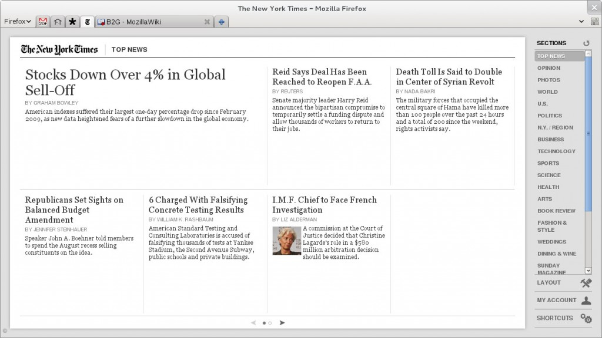
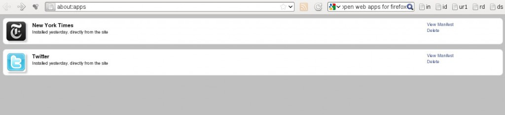
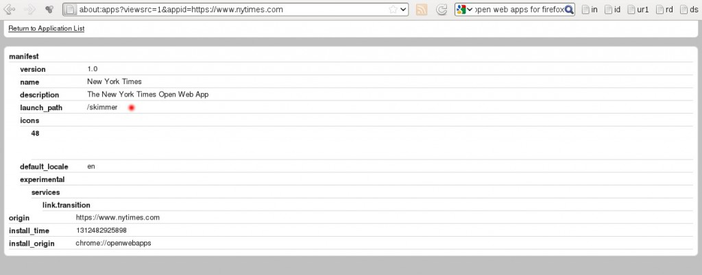

If you're following news about web technologies, and not living in a cave, you'd probably heard about Open Web Apps. An initiative of Mozilla Foundation.
I could try to prove why this is this the future, but currently I'd like to show you how cool this future is. Let's call this a glimpse of the future.
First of all install the web app add-on. Now go to New York Times website. You'll see a notification that this site has a web app. All you have to do is choose to install it. This will create a nytimes app tab on your firefox and a whole new experience on navigating to the newspaper.

This specific web app is taking advantage of touch gestures, so try it on your tablet as well.
So here is a cool thing, we discover along with Pierros. If you have a tablet that doesn't still support open web apps (nudge nudge say no more) you can still test this one. All you have to do is find the correct url. This web app doesn't manfest an address bar (because it doesn't need one) so type:
about:apps

select "View Manifest" and spot the "launch_path".

So go to your tablet and type: http://nytimes.com/skimmer/. Enjoy :)
 diaspora*
diaspora*